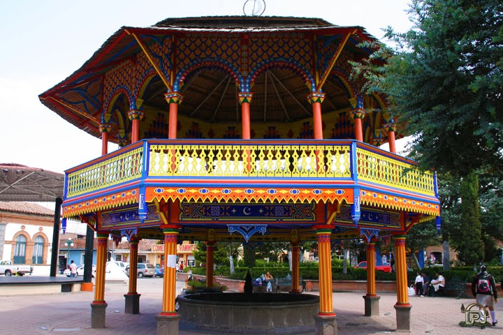
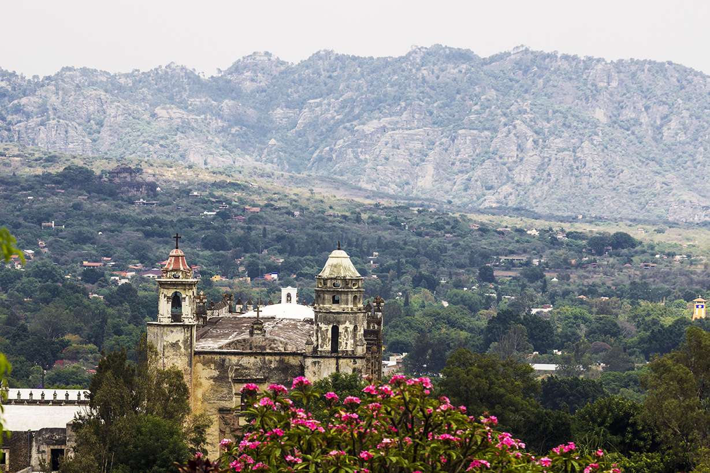
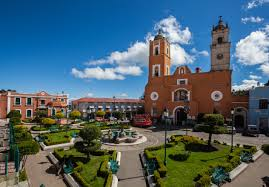
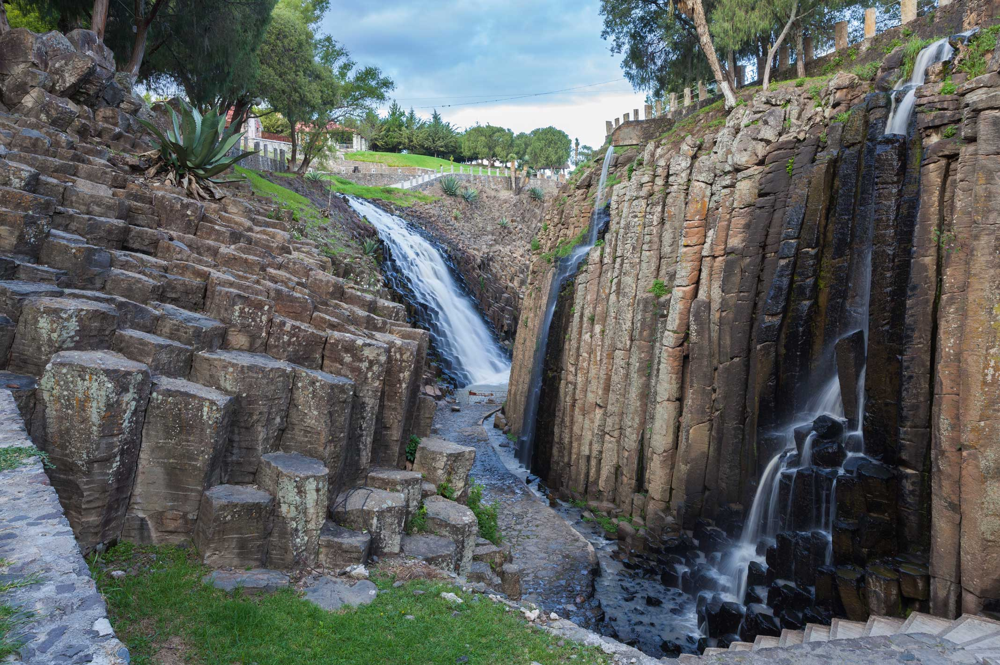
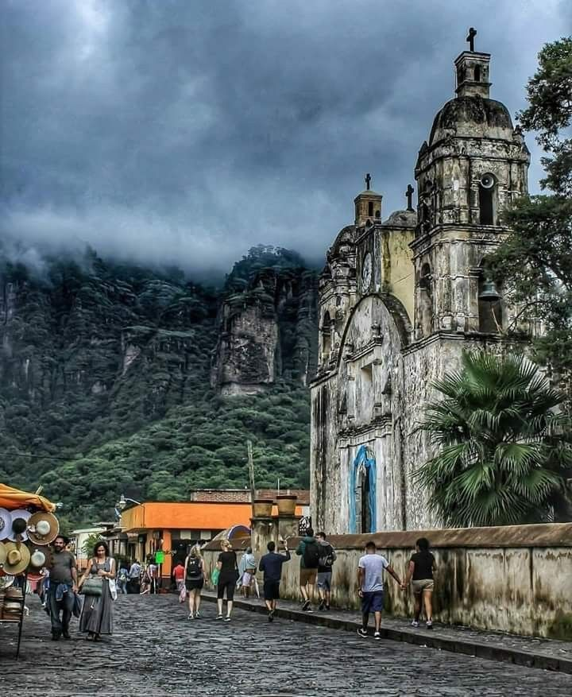
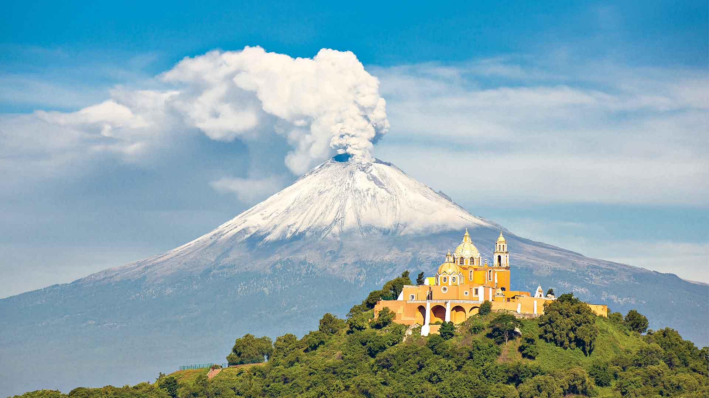

Un pueblo mágico

1Es...
Un grupo de comunidades mexicanas que han conservado su arquitectura original, tradiciones, historia y cultura..
2Debe :
- Crear un comité o grupo de trabajo de Pueblo Mágico.
- Tener un programa de acción para el desarrollo turístico de la localidad a los próximos 3 años.
- Presentar evidencia de un atractivo natural o cultural único, autentico y emblemático de la localidad, que sea diferente a otras localidades
- Contar con servicios de salud y seguridad pública para los turistas en caso de emergencia.
- Demostrar que se cuenta con inversión privada y social para el desarrollo turístico de la localidad.
Conoce
Proximamente

Tepoztlan
Pueblo místico que conserva un fuerte sentido de identidad.

Real del monte
Ubicado a quince minutos de la capital de Hidalgo es el lugar habitado más alto del país.
¿Sabías que...?

Huasca de Ocampo,
en el estado de Hidalgo, fue declarado como el primer Pueblo Mágico, en 2001.

Tepoztlán,
en Morelos perdió su estatus en 2009, pero lo recuperó un año después.

Cholula
es el pueblo con el mayor número de iglesias de México, la pirotecnia abunda por fiestas patronales.